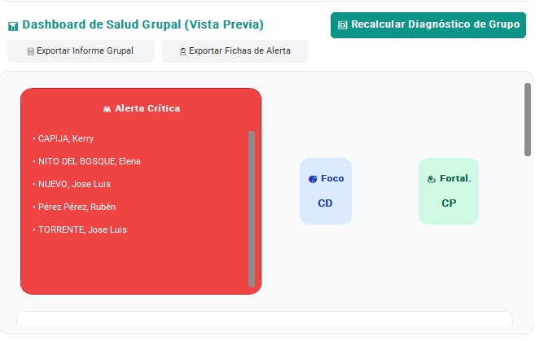
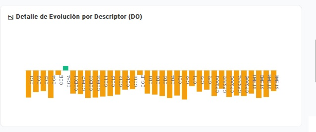
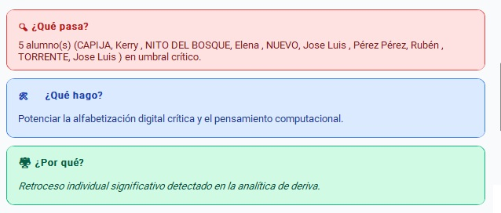

3
En el dashboard ubicado en la parte derecha inferior de la pantalla se pueden observar rápidamente la información competencial conjunta del grupo clase. La obtención de esta información de manera ágil y fiable permite realizar adapataciones pedagógicas desde el minuto 0
{"typeGame":"Mapa","instructions":"","showMinimize":false,"showActiveAreas":false,"author":"","url":"../content/resources/imagen48.jpg","authorImage":"","altImage":"","itinerary":{"showClue":false,"clueGame":"","percentageClue":40,"showCodeAccess":false,"codeAccess":"","messageCodeAccess":""},"points":[{"id":"p61943798656","title":"Recalcular diagnóstico","type":2,"url":"","video":"","x":0.7552777481079102,"y":0.09849274014310244,"x1":0,"y1":0,"points":[],"pointsd":[],"footer":"","author":"","alt":"","iVideo":0,"fVideo":0,"eText":"","iconType":85,"question":"","question_audio":"","toolTip":"","link":"","color":"#000000","fontSize":"14","map":{"id":"a61943798656","pts":[{"id":"p802402177115","title":"","type":0,"url":"","video":"","x":0,"y":0,"x1":0,"y1":0,"points":[],"pointsd":[],"footer":"","author":"","alt":"","iVideo":0,"fVideo":0,"eText":"","iconType":0,"question":"","question_audio":"","toolTip":"","link":"","color":"#000000","fontSize":"14","map":{"id":"a802402177115","url":"","alt":"","author":"","pts":[]},"slides":[{"id":"s802402177115","title":"","url":"","author":"","alt":"","footer":""}],"tests":[],"activeSlide":0,"activeTest":0}],"url":"","alt":"","author":"","active":0},"slides":[{"id":"s61943798656","title":"","url":"","author":"","alt":"","footer":""}],"tests":[],"activeSlide":0,"activeTest":0,"audio":""},{"id":"p903884968208","title":"Exportar Fichas de Alerta","type":2,"url":"","video":"","x":0.5640277481079101,"y":0.1586701609553821,"x1":0,"y1":0,"points":[],"pointsd":[],"footer":"","author":"","alt":"","iVideo":0,"fVideo":0,"eText":"","iconType":85,"question":"","question_audio":"","toolTip":"","link":"","color":"#000000","fontSize":"14","map":{"id":"a903884968208","pts":[{"id":"p373441609464","title":"","type":0,"url":"","video":"","x":0,"y":0,"x1":0,"y1":0,"points":[],"pointsd":[],"footer":"","author":"","alt":"","iVideo":0,"fVideo":0,"eText":"","iconType":0,"question":"","question_audio":"","toolTip":"","link":"","color":"#000000","fontSize":"14","map":{"id":"a373441609464","url":"","alt":"","author":"","pts":[]},"slides":[{"id":"s373441609464","title":"","url":"","author":"","alt":"","footer":""}],"tests":[],"activeSlide":0,"activeTest":0}],"url":"","alt":"","author":"","active":0},"slides":[{"id":"s903884968208","title":"","url":"","author":"","alt":"","footer":""}],"tests":[],"activeSlide":0,"activeTest":0,"audio":""},{"id":"p1471867194399","title":"Exportar informe grupal","type":0,"url":"../content/resources/imagen52.jpg","video":"","x":0.2590277481079102,"y":0.1634033055546963,"x1":0,"y1":0,"points":[],"pointsd":[],"footer":"Exporta en la carpeta \\output en formato .pdf un informe con las métricas y alertas del conjunto de la clase","author":"","alt":"","iVideo":0,"fVideo":0,"eText":"","iconType":85,"question":"","question_audio":"","toolTip":"","link":"","color":"#000000","fontSize":"14","map":{"id":"a1471867194399","pts":[{"id":"p525982012957","title":"","type":0,"url":"","video":"","x":0,"y":0,"x1":0,"y1":0,"points":[],"pointsd":[],"footer":"","author":"","alt":"","iVideo":0,"fVideo":0,"eText":"","iconType":0,"question":"","question_audio":"","toolTip":"","link":"","color":"#000000","fontSize":"14","map":{"id":"a525982012957","url":"","alt":"","author":"","pts":[]},"slides":[{"id":"s525982012957","title":"","url":"","author":"","alt":"","footer":""}],"tests":[],"activeSlide":0,"activeTest":0}],"url":"","alt":"","author":"","active":0},"slides":[{"id":"s1471867194399","title":"","url":"","author":"","alt":"","footer":""}],"tests":[],"activeSlide":0,"activeTest":0,"audio":""},{"id":"p720190496941","title":"Alertas críticas","type":2,"url":"","video":"","x":0.42902774810791017,"y":0.32793356503864335,"x1":0,"y1":0,"points":[],"pointsd":[],"footer":"","author":"","alt":"","iVideo":0,"fVideo":0,"eText":"","iconType":85,"question":"","question_audio":"","toolTip":"","link":"","color":"#000000","fontSize":"14","map":{"id":"a720190496941","pts":[{"id":"p300505725608","title":"","type":0,"url":"","video":"","x":0,"y":0,"x1":0,"y1":0,"points":[],"pointsd":[],"footer":"","author":"","alt":"","iVideo":0,"fVideo":0,"eText":"","iconType":0,"question":"","question_audio":"","toolTip":"","link":"","color":"#000000","fontSize":"14","map":{"id":"a300505725608","url":"","alt":"","author":"","pts":[]},"slides":[{"id":"s300505725608","title":"","url":"","author":"","alt":"","footer":""}],"tests":[],"activeSlide":0,"activeTest":0}],"url":"","alt":"","author":"","active":0},"slides":[{"id":"s720190496941","title":"","url":"","author":"","alt":"","footer":""}],"tests":[],"activeSlide":0,"activeTest":0,"audio":""},{"id":"p1501176401540","title":"Foco","type":2,"url":"","video":"","x":0.6465277481079101,"y":0.522890652059275,"x1":0,"y1":0,"points":[],"pointsd":[],"footer":"","author":"","alt":"","iVideo":0,"fVideo":0,"eText":"","iconType":85,"question":"","question_audio":"","toolTip":"","link":"","color":"#000000","fontSize":"14","map":{"id":"a1501176401540","pts":[{"id":"p575964291798","title":"","type":0,"url":"","video":"","x":0,"y":0,"x1":0,"y1":0,"points":[],"pointsd":[],"footer":"","author":"","alt":"","iVideo":0,"fVideo":0,"eText":"","iconType":0,"question":"","question_audio":"","toolTip":"","link":"","color":"#000000","fontSize":"14","map":{"id":"a575964291798","url":"","alt":"","author":"","pts":[]},"slides":[{"id":"s575964291798","title":"","url":"","author":"","alt":"","footer":""}],"tests":[],"activeSlide":0,"activeTest":0}],"url":"","alt":"","author":"","active":0},"slides":[{"id":"s1501176401540","title":"","url":"","author":"","alt":"","footer":""}],"tests":[],"activeSlide":0,"activeTest":0,"audio":""},{"id":"p1240669575184","title":"Fortaleza","type":2,"url":"","video":"","x":0.8777777481079102,"y":0.5249191072283873,"x1":0,"y1":0,"points":[],"pointsd":[],"footer":"","author":"","alt":"","iVideo":0,"fVideo":0,"eText":"","iconType":85,"question":"","question_audio":"","toolTip":"","link":"","color":"#000000","fontSize":"14","map":{"id":"a1240669575184","pts":[{"id":"p972433011629","title":"","type":0,"url":"","video":"","x":0,"y":0,"x1":0,"y1":0,"points":[],"pointsd":[],"footer":"","author":"","alt":"","iVideo":0,"fVideo":0,"eText":"","iconType":0,"question":"","question_audio":"","toolTip":"","link":"","color":"#000000","fontSize":"14","map":{"id":"a972433011629","url":"","alt":"","author":"","pts":[]},"slides":[{"id":"s972433011629","title":"","url":"","author":"","alt":"","footer":""}],"tests":[],"activeSlide":0,"activeTest":0}],"url":"","alt":"","author":"","active":0},"slides":[{"id":"s1240669575184","title":"","url":"","author":"","alt":"","footer":""}],"tests":[],"activeSlide":0,"activeTest":0,"audio":""},{"id":"p1160642852537","title":"Barra lateral","type":0,"url":"../content/resources/imagen49.jpg","video":"","x":0.9552777481079101,"y":0.2889421352538092,"x1":0,"y1":0,"points":[],"pointsd":[],"footer":"La barra deslizadora muestra información adicional del grupo clase. Se encuentra incluida en el informe grupal en formato .pdf","author":"","alt":"","iVideo":0,"fVideo":0,"eText":"","iconType":85,"question":"","question_audio":"","toolTip":"","link":"","color":"#000000","fontSize":"14","map":{"id":"a1160642852537","pts":[{"id":"p603481483431","title":"","type":0,"url":"","video":"","x":0,"y":0,"x1":0,"y1":0,"points":[],"pointsd":[],"footer":"","author":"","alt":"","iVideo":0,"fVideo":0,"eText":"","iconType":0,"question":"","question_audio":"","toolTip":"","link":"","color":"#000000","fontSize":"14","map":{"id":"a603481483431","url":"","alt":"","author":"","pts":[]},"slides":[{"id":"s603481483431","title":"","url":"","author":"","alt":"","footer":""}],"tests":[],"activeSlide":0,"activeTest":0}],"url":"","alt":"","author":"","active":0},"slides":[{"id":"s1160642852537","title":"","url":"","author":"","alt":"","footer":""}],"tests":[],"activeSlide":0,"activeTest":0,"audio":""},{"id":"p1643971173490","title":"Barra lateral","type":0,"url":"../content/resources/imagen50.jpg","video":"","x":0.9540277481079101,"y":0.4575293050759809,"x1":0,"y1":0,"points":[],"pointsd":[],"footer":"Deriva competencial del grupo clase por descriptor operativo","author":"","alt":"","iVideo":0,"fVideo":0,"eText":"","iconType":85,"question":"","question_audio":"","toolTip":"","link":"","color":"#000000","fontSize":"14","map":{"id":"a1643971173490","pts":[{"id":"p1282152416605","title":"","type":0,"url":"","video":"","x":0,"y":0,"x1":0,"y1":0,"points":[],"pointsd":[],"footer":"","author":"","alt":"","iVideo":0,"fVideo":0,"eText":"","iconType":0,"question":"","question_audio":"","toolTip":"","link":"","color":"#000000","fontSize":"14","map":{"id":"a1282152416605","url":"","alt":"","author":"","pts":[]},"slides":[{"id":"s1282152416605","title":"","url":"","author":"","alt":"","footer":""}],"tests":[],"activeSlide":0,"activeTest":0}],"url":"","alt":"","author":"","active":0},"slides":[{"id":"s1643971173490","title":"","url":"","author":"","alt":"","footer":""}],"tests":[],"activeSlide":0,"activeTest":0,"audio":""},{"id":"p910077375006","title":"Barra lateral","type":0,"url":"../content/resources/imagen51.jpg","video":"","x":0.9565277481079102,"y":0.7658544907810516,"x1":0,"y1":0,"points":[],"pointsd":[],"footer":"Pequeños consejos e indicaciones de intervención en función del estado del grupo clase (Pendiente de depuración)","author":"","alt":"","iVideo":0,"fVideo":0,"eText":"","iconType":85,"question":"","question_audio":"","toolTip":"","link":"","color":"#000000","fontSize":"14","map":{"id":"a910077375006","pts":[{"id":"p41161182642","title":"","type":0,"url":"","video":"","x":0,"y":0,"x1":0,"y1":0,"points":[],"pointsd":[],"footer":"","author":"","alt":"","iVideo":0,"fVideo":0,"eText":"","iconType":0,"question":"","question_audio":"","toolTip":"","link":"","color":"#000000","fontSize":"14","map":{"id":"a41161182642","url":"","alt":"","author":"","pts":[]},"slides":[{"id":"s41161182642","title":"","url":"","author":"","alt":"","footer":""}],"tests":[],"activeSlide":0,"activeTest":0}],"url":"","alt":"","author":"","active":0},"slides":[{"id":"s910077375006","title":"","url":"","author":"","alt":"","footer":""}],"tests":[],"activeSlide":0,"activeTest":0,"audio":""}],"isScorm":0,"textButtonScorm":"Guardar la puntuación","repeatActivity":true,"weighted":100,"textAfter":"","evaluationG":0,"selectsGame":[{"typeSelect":0,"numberOptions":4,"quextion":"","options":["","","",""],"solution":"","solutionWord":"","percentageShow":35,"msgError":"","msgHit":"","tests":[],"respuesta":"","numbertests":0}],"isNavigable":true,"showSolution":true,"timeShowSolution":3,"version":3,"percentajeIdentify":100,"percentajeShowQ":100,"percentajeQuestions":100,"autoShow":false,"autoAudio":true,"optionsNumber":0,"evaluation":false,"evaluationID":"d35416bc-50c0-444e-a37c-18a3f3232477","id":"idevice-1784565072966-87h1ja2mw","order":"","hideScoreBar":false,"hideAreas":false,"msgs":{"msgSubmit":"Enviar","msgIndicateWord":"Proporciona una palabra o expresión","msgClue":"¡Genial! La pista es:","msgErrors":"Errores","msgHits":"Aciertos","msgScore":"Puntuación","msgWeight":"Peso","msgMinimize":"Minimizar","msgMaximize":"Maximizar","msgFullScreen":"Pantalla Completa","msgNoImage":"Pregunta sin imágenes","msgSuccesses":"¡Correcto! | ¡Excelente! | ¡Genial! | ¡Muy bien! | ¡Perfecto!","msgFailures":"¡No era eso! | ¡Incorrecto! | ¡No es correcto! | ¡Lo sentimos! | ¡Error!","msgTryAgain":"Necesitas al menos %s% de respuestas correctas para obtener la información. Inténtalo de nuevo.","msgEndGameScore":"Comience la partida antes de guardar la puntuación.","msgScoreScorm":"La puntuación no se puede guardar porque esta página no forma parte de un paquete SCORM.","msgPoint":"Punto","msgAnswer":"Responder","msgOnlySaveScore":"¡Solo puede guardar la puntuación una vez!","msgOnlySave":"Solo puede guardar una vez","msgInformation":"Información","msgYouScore":"Su puntuación","msgOnlySaveAuto":"Su puntuación se guardará después de cada pregunta. Solo puede jugar una vez.","msgSaveAuto":"Su puntuación se guardará automáticamente después de cada pregunta.","msgSeveralScore":"Puede guardar la puntuación tantas veces como quiera","msgYouLastScore":"La última puntuación guardada es","msgActityComply":"Ya ha realizado esta actividad.","msgPlaySeveralTimes":"Puede realizar esta actividad cuantas veces quiera","msgClose":"Cerrar","msgPoints":"puntos","msgPointsA":"Puntos","msgQuestions":"Preguntas","msgAudio":"Audio","msgAccept":"Aceptar","msgYes":"Sí","msgNo":"No","msgShowAreas":"Mostrar áreas activas","msgShowTest":"Mostrar cuestionario","msgGoActivity":"Haz clic aquí para hacer esta actividad","msgSelectAnswers":"Selecciona las opciones correctas y haz clic en el botón ","msgCheksOptions":"Marca todas las opciones en el orden correcto y haz clic en ","msgWriteAnswer":"Escribe la palabra o frase correcta y haz clic en ","msgIdentify":"Identifica","msgSearch":"Buscar","msgClickOn":"Haz clic en","msgReviewContents":"Debes revisar el %s% de los contenidos de la actividad antes de completar el cuestionario.","msgScore10":"¡Todo está perfecto! ¿Quieres repetir esta actividad?","msgScore4":"No has superado la prueba. Revisa sus contenidos e intentarlo de nuevo. ¿Quieres repetir la actividad?","msgScore6":"¡Genial! Has superado la prueba, pero seguro que puedes mejorar. ¿Quieres repetir la actividad?","msgScore8":"¡Casi perfecto! Aún puedes hacerlo mejor. ¿Quieres repetir la actividad?","msgNotCorrect":"¡No es correcto! Has hecho clic en","msgNotCorrect1":"¡No es correcto! Has hecho clic en","msgNotCorrect2":"y la respuesta correcta es","msgNotCorrect3":"¡Prueba otra vez!","msgAllVisited":"¡Genial! Has visitado los puntos requeridos.","msgCompleteTest":"Puedes hacer la prueba.","msgPlayStart":"Pulsa aquí para empezar","msgSubtitles":"Subtítulos","msgSelectSubtitles":"Selecciona un archivo de subtítulos. Formatos admitidos:","msgNumQuestions":"Número de preguntas","msgHome":"Inicio","msgReturn":"Volver","msgCheck":"Comprobar","msgUncompletedActivity":"Actividad no completada","msgSuccessfulActivity":"Actividad superada. Puntuación: %s","msgUnsuccessfulActivity":"Actividad no superada. Puntuación: %s","msgTypeGame":"Mapa"}}





Botón de refresco de cálculo de métricas. Sólamente se usa en caso de que se añada algún nuevo estudiante.
Exporta en formato .pdf en la carpeta \output de manera automática y conjunta los informes diagnóstico de todos los alumnos que cuentas con Alertas críticas. Se muestran visualmente en un cuadrado rojo de manera visual
En este cuadro se muestran aquellos estudiantes que muestran alertas críticas para su rápida detección de manera visual.
En este cuadro se muestra aquella competencia clave que muestra una mayor deriva competencial
En este cuadro se muestra la competencia clave en la que el grupo muestra una mayor solvencia
Su navegador no es compatible con esta herramienta.